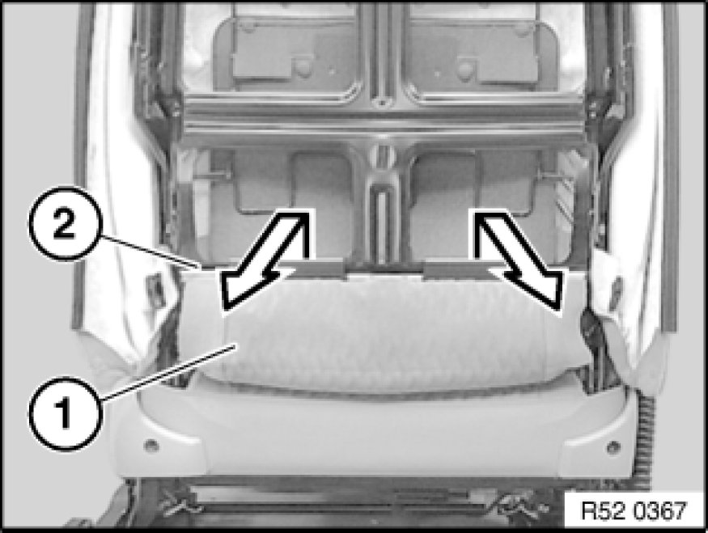
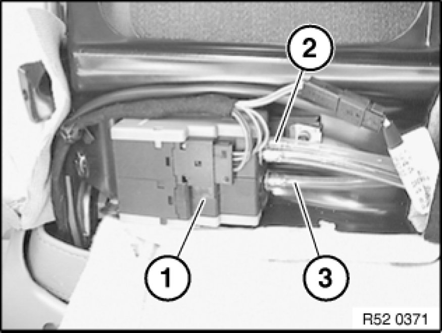

Replacing Lumbar Cushion on Front Left or Right Seat
52 13 050 - Replacing lumbar cushion on front left or right seat
Carry out following tasks beforehand:
Removing rear panel on front seat backrest:
- Basic seat Removing and Installing/Replacing Rear Panel on Left or Right Front Seat Backrest (Normal/Manual).
- Sports seat Removing and Installing/Replacing Rear Panel on Front Left or Right Seat Backrest (Sports/Manual)

Detach backrest cover (1) from backrest frame (2).

Note:
If necessary, gently heat air hose when firmly seated. Housing (valve block) must not be unclipped (leaks). If it is unclipped, release screw and clip housing together.
Disconnect hoses (2) and (3) from valve housing (1).
2 - Hose (blue) top cushion
3 - Hose (red) bottom cushion
Installation:
Air hoses (2) and (3) must be laid without kinks.
Unhook lumbar cushion (1) from spring wire (2).
Version with seat heating:
Slide cable (3) for backrest heating to one side a little.
Press back support (1) a little.
Turn lumbar cushion (2) and pull out downwards.
Installation:
Check lumbar cushion (1) at top and (2) bottom for damage.
Air hoses (3) must not be kinked.
Installation:
Attach lumbar cushion (1) to third wire (2) above spring (3).

Note:
For purposes of clarity, shown here without valve housing.
Installation:
Observe cable guide (1) for backrest heating.
Lay air hoses (2) without kinks through hole (3).

Installation:
Check function.